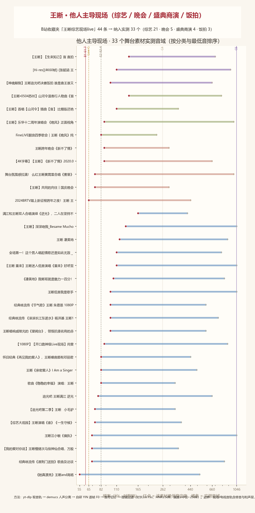

综艺 / 晚会 / 盛典商演 / 饭拍 · 33 个素材 · 更新 2026-09-09 14:33

来源：B站收藏夹「王晰综艺现场live」（fid=4075783258，共 44 条）。 自动归类 + 逐条人工校准后，纳入实测 33 个： 综艺 21、 晚会 5、 盛典商演 4、 饭拍直拍 3。 另有棚版混音 8 条（非现场，单列不计入）与他人分析视频/混剪 3 条（非原始音源，排除）。
| 分类 | n | 最低音中位(MIDI) | 最高音中位(MIDI) | 跨度中位 | 稳定性(音分) | 密度(/s) | 低音区占比 | 高音区占比 |
|---|---|---|---|---|---|---|---|---|
| 综艺 | 21 | 41 | 76 | 2.92 | 5.7 | 1.63 | 12% | 19% |
| 晚会 | 5 | 38 | 69 | 2.75 | 4.6 | 1.52 | 12% | 20% |
| 盛典商演 | 4 | 43 | 72 | 2.08 | 8.3 | 1.72 | 11% | 18% |
| 饭拍直拍 | 3 | 45 | 77 | 2.75 | 5.2 | 1.75 | 1% | 40% |
MIDI 参考：C3=48、C4=60、E4=64、C5=72、E5=76、C6=84。
| # | 分类 | 曲目（点击回 B站） | 最低音 | Hz | 最高音 | Hz | 跨度 | 音符 | 密度 | 稳定性 | 颤音 |
|---|---|---|---|---|---|---|---|---|---|---|---|
| 1 | 综艺 | 《她真漂亮》王晰and高杨 | A1 | 55.0 | C5 | 523 | 3.25 | 351 | 1.20 | 4.1 | 5.38/58 |
| 2 | 综艺 | 经典咏流传《渡荆门送别》歌曲及访谈 | C#2 | 69.3 | G#5 | 831 | 3.58 | 898 | 1.20 | 5.0 | 4.79/49 |
| 3 | 综艺 | 【我的爱对你说】王晰檀健次马佳神仙合唱，万般美好《如愿》而至 | C#2 | 69.3 | F4 | 349 | 2.33 | 437 | 1.79 | 3.8 | 5.38/76 |
| 4 | 综艺 | 王晰汪小敏《偏执》 | C#2 | 69.3 | C6 | 1046 | 3.92 | 489 | 2.03 | 4.7 | 5.19/62 |
| 5 | 综艺 | 【综艺大观园】王晰演唱《谁》《一生守候》 | D2 | 73.4 | F#4 | 370 | 2.33 | 452 | 1.36 | 6.0 | 5.38/75 |
| 6 | 综艺 | 【追光吧第二季】王晰 小毛驴 | D2 | 73.4 | E4 | 330 | 2.17 | 219 | 1.23 | 5.3 | 5.07/42 |
| 7 | 综艺 | 追光吧 王晰满江 逆光 | D#2 | 77.8 | E5 | 659 | 3.08 | 432 | 1.59 | 5.2 | 5.22/60 |
| 8 | 综艺 | 歌曲《稳稳的幸福》 演唱：王晰 | E2 | 82.4 | E4 | 330 | 2.00 | 352 | 1.88 | 6.6 | 5.07/65 |
| 9 | 综艺 | 王晰《亲密爱人》I Am a Singer 2016 | E2 | 82.4 | B4 | 494 | 2.58 | 462 | 1.52 | 5.8 | 5.74/83 |
| 10 | 综艺 | 怀旧经典《再见我的爱人》，王晰嗓音颇有邓丽君的魅力，全场震惊 | E2 | 82.4 | A4 | 440 | 2.42 | 562 | 1.82 | 7.7 | 5.38/80 |
| 11 | 综艺 | 【1080P】【开口跪神级Live现场】尚雯婕 王晰《云与海》 | F2 | 87.3 | A5 | 880 | 3.33 | 517 | 2.03 | 5.6 | 5.65/97 |
| 12 | 综艺 | 王晰唱响戚继光的《望阙台》，领悟抗倭名将的赤胆忠心！【经典咏流传第四季】 | G2 | 98.0 | D5 | 587 | 2.58 | 367 | 1.58 | 5.7 | 5.07/70 |
| 13 | 综艺 | 经典咏流传 《滚滚长江东逝水》杨洪基 王晰1080P超清重制版 | G2 | 98.0 | F#5 | 740 | 2.92 | 433 | 1.43 | 7.9 | 5.07/78 |
| 14 | 综艺 | 经典咏流传《节气歌》王晰 朱德恩 1080P超清重制版 | G2 | 98.0 | D5 | 587 | 2.58 | 568 | 2.04 | 5.6 | 5.07/77 |
| 15 | 综艺 | 王晰低音我是歌手 | G2 | 98.0 | C6 | 1046 | 3.42 | 469 | 1.67 | 5.8 | 5.38/73 |
| 16 | 综艺 | 《凄美地》我晰哥就是魅力一百分！ | G#2 | 103.8 | G#5 | 831 | 3.00 | 468 | 1.86 | 5.3 | 4.88/57 |
| 17 | 综艺 | 〖王晰 重来〗王晰迷人低音演唱《重来》好听至极，唱到心坎里去了！ | A2 | 110.0 | C6 | 1046 | 3.25 | 445 | 1.82 | 7.1 | 5.15/75 |
| 18 | 综艺 | 全场第一！这个男人唱起情歌还是如此无敌 _ 王晰《牵手》_ 中国情歌大会 | A2 | 110.0 | G5 | 784 | 2.83 | 516 | 1.60 | 6.3 | 5.02/62 |
| 19 | 综艺 | 王晰 凄美地 | A#2 | 116.5 | A5 | 880 | 2.92 | 468 | 1.97 | 6.8 | 4.79/72 |
| 20 | 综艺 | 【王晰】深深吻我_Besame Mucho | C3 | 130.8 | C6 | 1046 | 3.00 | 136 | 1.26 | 6.0 | 5.12/66 |
| 21 | 综艺 | 满江和王晰双人合唱演绎《逆光》，二人在坚持不懈地磨合之下，最终呈现效果令人惊 | E3 | 164.8 | G#4 | 415 | 1.33 | 137 | 1.63 | 5.0 | 5.28/52 |
| 22 | 晚会 | 2024BRTV踏上新征程跨年之夜！王晰 王弦演唱《美丽的草原我的家》 ！ | C2 | 65.4 | A4 | 440 | 2.75 | 499 | 2.27 | 4.6 | 5.07/58 |
| 23 | 晚会 | 【王晰】共同的向往丨国庆晚会 | D2 | 73.4 | D4 | 294 | 2.00 | 295 | 1.25 | 2.2 | 5.38/64 |
| 24 | 晚会 | 舞台氛围感拉满！ 么红王晰黄霄雲合唱《雾里》 | D2 | 73.4 | B5 | 988 | 3.75 | 662 | 2.32 | 4.6 | 5.38/86 |
| 25 | 晚会 | 【4K字幕】【王晰】《新不了情》2020.01.01跨年晚会 | F2 | 87.3 | E5 | 659 | 2.92 | 303 | 1.52 | 5.0 | 4.79/60 |
| 26 | 晚会 | 王晰跨年晚会《新不了情》 | F2 | 87.3 | D4 | 294 | 1.75 | 386 | 1.48 | 6.8 | 5.07/91 |
| 27 | 盛典商演 | FineLIVE翻浪四季歌会｜王晰《晚风》纯享版 | E2 | 82.4 | A#3 | 233 | 1.50 | 535 | 1.86 | 9.6 | 5.07/101 |
| 28 | 盛典商演 | 【王晰】乐华十二周年演唱会 《晚风》正面视角想要的响指都有！ | F2 | 87.3 | B5 | 988 | 3.50 | 330 | 1.18 | 5.0 | 4.79/74 |
| 29 | 盛典商演 | 【王晰】首唱【山河令】插曲【盲】 比棚版还绝绝子的LIVE【20210330 | A2 | 110.0 | F4 | 349 | 1.67 | 481 | 2.03 | 10.0 | 4.79/92 |
| 30 | 盛典商演 | 【王晰•0504苏州】山河令温客行人物曲《盲》 | C#3 | 138.6 | G5 | 784 | 2.50 | 362 | 1.57 | 7.0 | 5.07/78 |
| 31 | 饭拍直拍 | 【神魂颠倒】王晰追光吧决赛饭拍 谁是蛊王谁又在神魂颠倒 | G2 | 98.0 | E5 | 659 | 2.75 | 315 | 1.75 | 5.2 | 6.15/85 |
| 32 | 饭拍直拍 | [Hi-res][4K60帧]-[张韶涵 王晰] - 黎明前的黑暗 (Liv | A2 | 110.0 | A#5 | 932 | 3.08 | 471 | 1.89 | 2.7 | 4.93/47 |
| 33 | 饭拍直拍 | 【王晰】【生来知己】盲 直拍 | C#3 | 138.6 | F5 | 698 | 2.33 | 368 | 1.51 | 7.6 | 4.79/75 |
同一测量管线对比录音室专辑（王晰主导，72 首）与这批舞台素材（他人主导，33 个）： 他人主导时高音区占比 4% → 27%，低音区占比 23% → 11%， 最高音中位 F#4 → E5，跨度 2.25 → 2.75 个八度；而颤音速率 5.17 → 5.07 Hz（无显著差异），可视作跨情境的「声学指纹」。 详见 音域实测 板块四（含统计检验与敏感性分析）。
数据底账：data/archive_stage.json（逐条指标）｜逐帧 F0 与逐曲统计存于本地音域分析目录｜
生成脚本：音域分析/生成他人主导报告.py + project_b/build_stage_page.py。